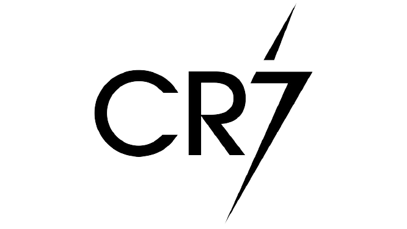

Critiano Ronaldo
Cristiano Ronaldo dos Santos Aveiro GOIH ComM (Portuguese pronunciation: [kɾiʃˈtjɐnu ʁɔˈnaɫdu]; born 5 February 1985) is a Portuguese professional footballer
who plays as a forward for Serie A club Juventus and captains the Portugal national team. Often considered the best player in the world and widely regarded
as one of the greatest players of all time, Ronaldo has won five Ballon d'Or awards[note 3] and four European Golden Shoes, the most by a European player.
He has won 32 major trophies in his career, including seven league titles, five UEFA Champions Leagues, one UEFA European Championship, and one UEFA Nations League.
Ronaldo holds the records for most goals (134) and assists (42) in the Champions League, most goals in the European Championship (14), and is currently tied with Ali Daei
for most international goals (109). He is one of the few recorded players to have made over 1,100 professional career appearances, and has scored over 780 official senior
career goals for club and country.